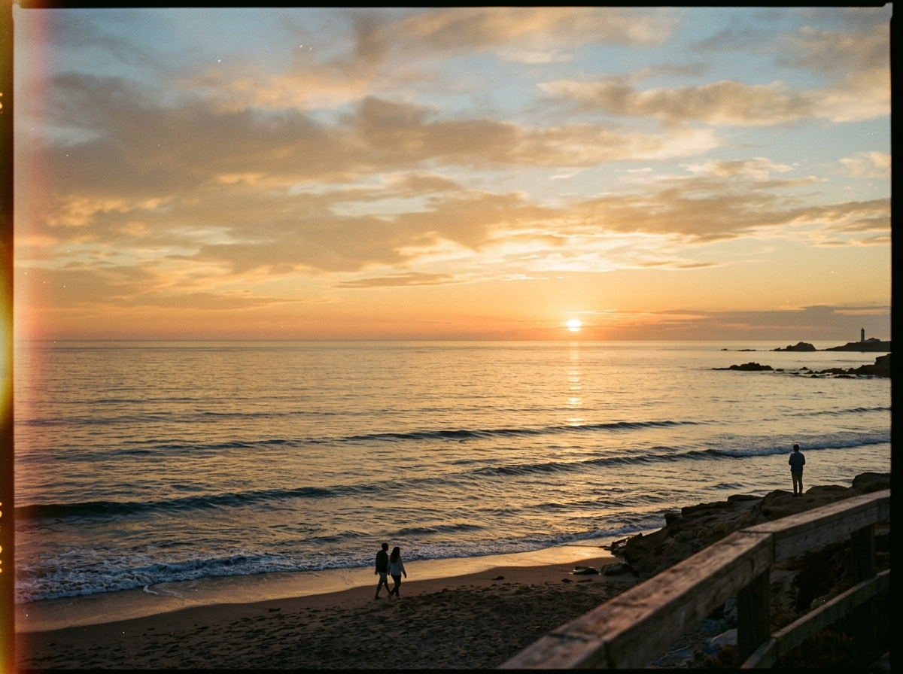

Há momentos na cadência dos dias em que as horas parecem suspensas por um fio invisível de calmaria. Escrevo-lhe não pela urgência das notícias do mundo exterior, mas pela necessidade sutil de ancorar pensamentos que, de outro modo, evaporariam na bruma do esquecimento. Enquanto as sombras se alongam suavemente pelo assoalho de madeira, percebo que certas palavras só ganham vida quando encontram a paciência de quem sabe escutar.

O silêncio que acompanha esta escrita não é vazio; é antes uma tela clara sobre a qual todas as inquietações humanas se revelam com uma nitidez quase desconcertante. Costumamos acreditar que o tempo é um rio contínuo e impassível, fluindo sempre na mesma direção com a indiferença das grandes correntes. No entanto, nas esquinas secretas da memória, descobrimos que o tempo é muito mais uma tapeçaria circular, onde o passado, o presente e o que ainda há de vir se tocam e se influenciam mutuamente.
Lembro-me das noites de vigília em que observávamos a marcha das constelações pela abóbada escura. Cada estrela que nos enviava seu vislumbre já havia, talvez, deixado de existir há milênios, e mesmo assim sua luz persistia em nos guiar, cruzando abismos incomensuráveis apenas para encontrar nossos olhos curiosos. Não é essa, afinal, a mesma magia que habita cada frase registrada em uma página? Um pensamento nascido no recôndito de uma mente que viaja no espaço para desabrochar no peito de quem lê.
Vivemos perseguindo a firmeza dos monumentos e a solidez das promessas inabaláveis. Erguemos castelos de lógica na tentativa de domar a imponderabilidade do destino, como se pudéssemos traçar linhas retas num oceano revolto. Mas quanto mais avançamos, mais evidente se torna que a beleza da existência reside justamente em sua vulnerabilidade intrínseca.
As árvores que sobrevivem às tempestades de inverno não são as mais rígidas ou austeras, mas aquelas que aceitam dobrar seus ramos sob a fúria do vento. Há uma nobreza profunda na flexibilidade do espírito. Quando nos desarmamos da vaidade de controlar cada desfecho, permitimos que a vida nos surpreenda com caminhos que nossa imaginação limitada jamais ousaria arquitetar.
Veja, por exemplo, o ritmo das estações. As folhas de outono não resistem à gravidade; elas se desprendem com uma elegância que parece mais um voo do que uma queda. Sabem que o repouso no solo úmido é o prelúdio silencioso do renascimento na primavera seguinte. Por que, então, relutamos tanto diante dos términos inevitáveis que pontuam nossas trajetórias? Cada adeus carrega a semente adormecida de um novo começo.
Costuma-se dizer que os lugares onde fomos felizes guardam fragmentos perpétuos de nossa alma. Acredito que os lugares são testemunhas silenciosas; são as pessoas com quem compartilhamos o pão, as risadas e o pranto que consagram as pedras e as janelas com significado imortal. O valor das coisas terrenas não repousa em sua substância, mas na ressonância que produzem em nós.
Reflita sobre os diálogos que moldaram seu caráter. Raras vezes foram os discursos inflamados ou as teorias rebuscadas que lhe deram coragem nos momentos de desespero; quase invariavelmente, foi a frase despretensiosa de um companheiro leal, dita à meia-luz, enquanto o café esfriava sobre a mesa. A sabedoria mais genuína costuma sussurrar, dispensando o alarido das trombetas.
Ao contemplarmos o horizonte que se avizinha, é natural que sintamos o peso da expectativa. O amanhã nos desafia com suas perguntas ainda não formuladas, cobrando decisões para as quais nem sempre nos sentimos preparados. Contudo, quero lembrá-lo de que ninguém caminha senão um passo de cada vez. O fardo do ano inteiro se torna intolerável se tentarmos carregá-lo num único dia de angústia.
Cultive a paciência para com seus próprios processos de maturação. O vinho mais refinado não apressa seu tempo nas barricas de carvalho, e a pérola exige anos de paciente clausura na ostra antes de exibir seu brilho iridescente. Por que exigir de si mesmo a perfeição instantânea que a própria natureza recusa a todas as suas criaturas?
Permita-se errar sem carregar a culpa como um grilhão de ferro. O erro nada mais é do que a bússola recalibrando a rota rumo à maturidade. Quem nunca tropeçou nas pedras do caminho jamais conheceu a alegria redentora de se reerguer com os olhos fixos na alvorada.
Guarde estas palavras como quem guarda uma folha seca entre as páginas de um volume antigo. Não pretendo que elas sejam mandamentos ou dogmas, mas simples lanternas dispostas ao longo de uma vereda escura, lembrando-lhe de que, por mais solitária que pareça a estrada, outros já passaram por aqui e deixaram pequenos rastros de calor e companheirismo.
Que a serenidade acompanhe seus passos nas horas claras e que a esperança seja seu escudo quando o crepúsculo trouxer o manto das dúvidas. O mundo continuará girando com sua pressa insaciável, mas você tem o poder soberano de escolher quando pausar, respirar fundo e honrar o milagre singular de estar vivo.